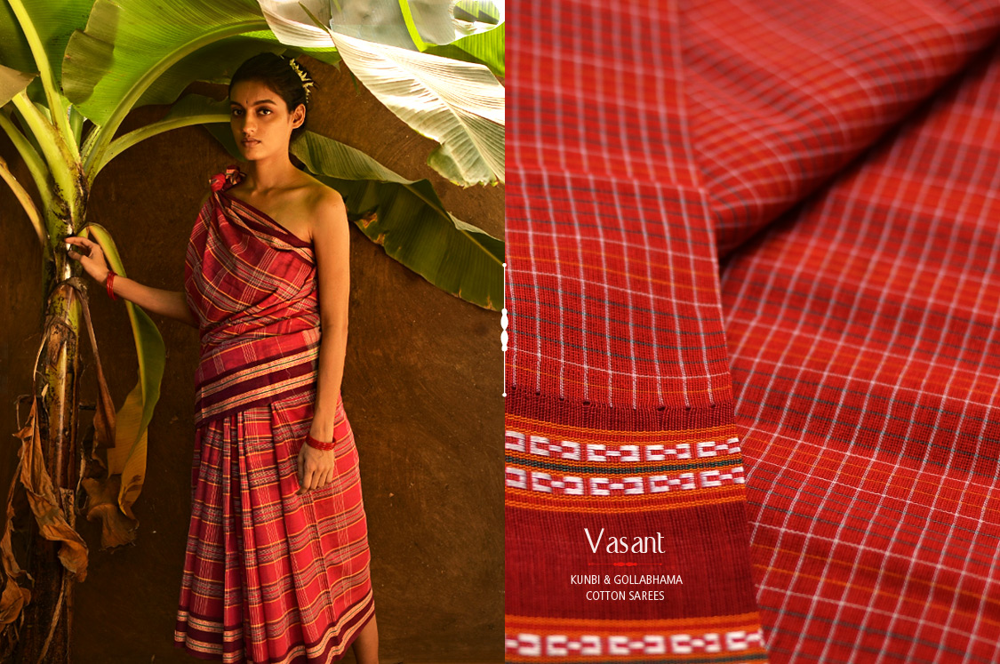

An eminent geographical indication, kunbi saree find their home in the state of Goa.
The Kunbi saree, also known as the Kunbi drape, is a traditional garment from the Kunbi tribe of Goa, India. The Kunbi tribe are one of Goa's indigenous communities, and the saree is named after them. The Kunbis are believed to be the oldest tribe in Goa, and are known for being industrious and mild-mannered. The saree is a symbol of their heritage and craftsmanship.
Kunbi sarees are traditionally handwoven on looms using locally sourced materials like cotton and silk threads. The weaving process can take several days and often involves a collective effort within the community
